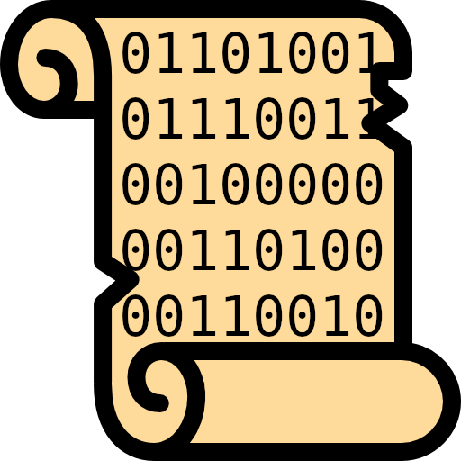

BEn — Babylonian Engine
AI platform for cuneiform analysis
Cuneiform OCR
Read cuneiform from tablet photographs with Kraken & VLMs.
Curate transliterations
Edit, correct, and validate ATF transliterations side-by-side with the image.
Layout detection
YOLO-trained detectors find lines, columns, and signs.
Sign classification
CuRe pairs each glyph with its sign list entry.
Train your own models
Bring your corpus, fine-tune Kraken, YOLO, or VLMs.
Library
Browse, search, and organise tablets across your projects.